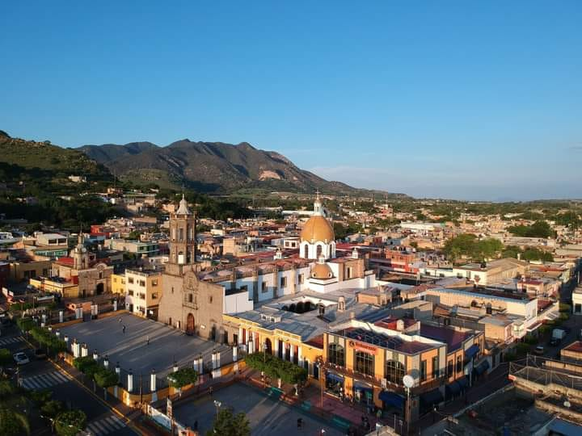

Sus habitantes eran tecuexes y su asiento principal lo tenían en dos islas dentro de la laguna, ahora desecada, de las cuales denominaban a la mayor Atitic.
Al llegar los españoles, ya existía la población de Magdalena con el nombre de Xochitepec, palabra derivada de Juchitepeco o Xochiteptque que se interpreta como monte florido. Pertenecía al señorío de Etzatlán y estaba gobernado por Goaxicar, indio de talento y de importancia por su valor.
En 1524, Francisco Cortés de San Buenaventura conquistó esta región y al recibir la obediencia de Etzatlan, mandó llamar al cacique Goxicar; éste, temeroso de que los peninsulares pasaran a su pueblo, prefirió ir a rendirles tributos aunque de mala gana. Pero después comenzó a maquinar en contra de los conquistadores. Se sublevó en 1538 siendo sometido por los españoles. De nuevo Goaxicar, en 1541, tomó partido durante la Guerra del Mixtón aliándose a los indígenas de Tequila, Ameca y Ahualulco, entre otros pueblos.
En 1530 llega a la conquista de esta región Cristóbal de Oñate enviado por Nuño de Guzmán, la belleza y fertilidad de la provincia, despertaron en él el deseo de agregarla a sus territorios y así se lo hizo saber a Juan de Escárcena, pero con entereza resistió a las ambiciones de Guzmán.
Los franciscanos evangelizaron la región; en 1534 llegaron los frailes a fundar el convento de la Purísima Concepción de Etzatlán y catequizar y bautizar a los aborígenes. Pidieron a Goaxicar que les ayudara y al concluirse la iglesia y convento de Etzatlán retornaron los naturales a las dos poblaciones que se hallaban en igual número de islas de la laguna. A una la denominaron de Señor Santiago y a la más grande San Juan Atlitic.
Precisamente adquirió esta población el nombre de Magdalena, de la hija de Goaxicar bautizada con el nombre de Magdalena.
Una tromba arrasó los poblados, viéndose obligados los sobrevivientes a abandonar las islas y poblar los sitios denominados Santa María del Mezquital, Mezquicuatlán y Juchitepec en honor del antiguo cacicazgo.
Siendo alcalde mayor de Etzatlán Francisco Martínez de la Mancha y estando por ende al cuidado de Juchitepec; fray Luis Navarro, construyó la iglesia y el convento dedicándolos a Santa María Magdalena y Xuchitepec.

En 1825 tenía ayuntamiento y en 1838 la categoría de pueblo. Desde 1825 pertenecía al 5° cantón de Etzatlán y en 1872 pasó a formar parte del 12° cantón.
Se desconoce el decreto que creó este municipio pero ya existía en 1837 como se desprende del decreto del 13 de marzo del mismo año. La División Territorial y Política del Estado de Jalisco, dispuesta en el decreto del 1o. de mayo de 1886, ya menciona a Magdalena como municipalidad.